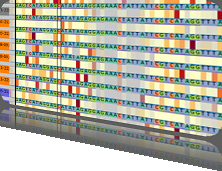

4th Symposium on Biological Data Visualization
11-12 July // Boston, MA @ ISMB
11-12 July // Boston, MA @ ISMB

Schedule
| Friday July 11th | |
|---|---|
|
8:30 am |
BioVis Welcome, Jos Roerdink |
|
9:00 am |
Keynote Lecture: Visualization Analysis and Design for Biology |
|
10:15 am |
Coffee/Tea Break |
|
10:45 am |
Primer: Fundamentals of Visualizing Biological Data, Session Chair: Cydney Nielsen |
|
11:15 am |
BioVis Papers: Genomic Data Visualization, Session Chair: Inna Dubchak |
|
11:15 am |
Analyzing Chromatin Using Tiled Binned Scatterplot Matrices |
|
11:40 am |
MCA: Multiresolution Correlation Analysis, a tool for sub-population identification in single-cell gene expression data |
|
12:05 am |
Addressing the unmet need for visualizing Conditional Random Fields in Biological Data |
|
12:30 pm |
Lunch Break with Lunch Box and Beverages |
|
1:50 pm |
BioVis Papers: Molecular Visualization, Session Chair: James Procter |
|
1:50 pm |
MIMTool: A Tool for Drawing Molecular Interaction Maps |
|
2:15 pm |
eXamine: Exploring annotated modules in networks |
|
2:40 pm |
SketchBio: A Scientist’s 3D Interface for Molecular Modeling and Animation |
|
3:05 pm |
Illustrating Polymerization using Three-level Model Fusion |
|
3:30 pm |
Coffee/Tea Break |
|
4:00 pm |
Feedback session BioVis2014 |
|
4:30 pm |
Poster Fast Forward, Chairs: Alexander Lex, Marc Streit |
|
5:00 pm |
Poster Presentation and Reception with Drinks and Finger Food |
| Saturday July 12th | |
|---|---|
|
8:30 am |
Primer: Presenting Data, Session Chair: Cydney Nielsen |
|
9:00 am |
BioVis Papers: Visualizing Imaging Data, Session Chair: Hendrik Strobelt |
|
9:00 am |
Visualization of gene expression information within the context of the mouse anatomy, |
|
9:25 am |
Visualization of Large Volumetric Multi-Channel Microscopy Data Streams on Standard PCs, Tobias Brix, Jörg-Stefan Praßni, Klaus Hinrichs |
|
9:50 am |
Visualization and Correction of Automated Segmentation, Tracking and Lineaging from 5-D Stem Cell Image Sequences, |
|
10:15 am |
Coffee/Tea Break |
|
10:45 am |
BioVis Papers: Population Data Visualization, Session Chair: Nils Gehlenborg |
|
10:45 am |
inPHAP - Interactive visualization of genotype and phased haplotype data, |
|
11:10 am |
Helium: Visualization of Large Scale Plant Pedigrees, |
|
11:35 am |
iGPSe: A Visual Analytic System for Integrative Genomic Based Cancer Patient Stratification, |
|
12:00 pm |
Highlights Session, Session Chair: Kay Nieselt |
|
12:00 am |
Characterizing Cancer Subtypes Using Dual Analysis in Caleydo StratomeX, |
|
12:15 am |
NetGestalt: integrating multidimensional omics data over biological networks, |
|
12:30 pm |
Lunch Break with Lunch Box and Beverages |
|
1:45 pm |
Highlights Session, Session Chair: Jos Roerdink |
|
1:45 pm |
Observing Genomics and Phenotypical Patterns in the Developing Mouse Brain, |
|
2:00 pm |
Visualizing RNA Microarray datasets with Glyph SPLOMs, |
|
2:15 pm |
Data Contest Session: Resting-state functional brain networks (5 entries), Biological Visualization and Medical Advancements : Scott Fasone, Evan Hollins, and Sean Morehart |
|
3:30 pm |
Coffee/Tea Break |
|
4:00 pm |
Challenges Session, Chairs: Michel Westenberg and Greg Carter |
|
4:00 pm |
Interactive graphics for high-dimensional genetic data, |
|
4:35 pm |
Visualization Challenges and Advances in Metagenomics, |
|
5:15 pm |
Awards Ceremony and Closing Remarks, Kay Nieselt |
BioVis 2014 is an official SIG of ISMB

BioVis 2014 Supporters
Platinum:

Silver:


We also acknowledge the support by BMC.